Imagine uma equipe de desenvolvimento criando uma nova plataforma de educação mediada por IA. Antes de pensar diretamente na solução, a equipe precisa compreender o ecossistema sociotécnico no qual essa tecnologia será inserida.
1 A equipe utiliza a Lousa Sociotécnica para mapear os actantes (atores humanos e não humanos) e compreender as relações presentes nesse cenário.
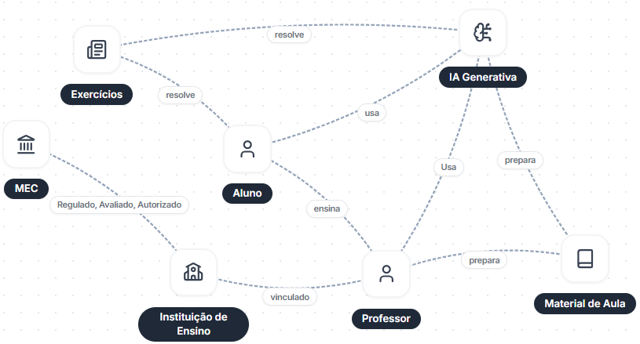
2 Ao analisar o ecossistema atual, a equipe identifica tendências e as registra no Caderno 1.
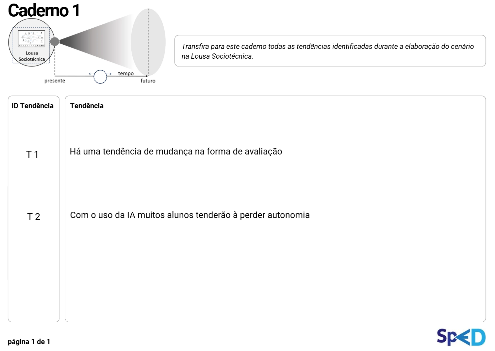
3 A equipe realiza um corte temporal e projeta o futuro: o que pode acontecer se essas tendências se confirmarem?
No Caderno 2, são registradas a data especulada e as possíveis implicações sociotécnicas. Também são analisados os impactos positivos e negativos de cada implicação, além do grau de magnitude desses efeitos.
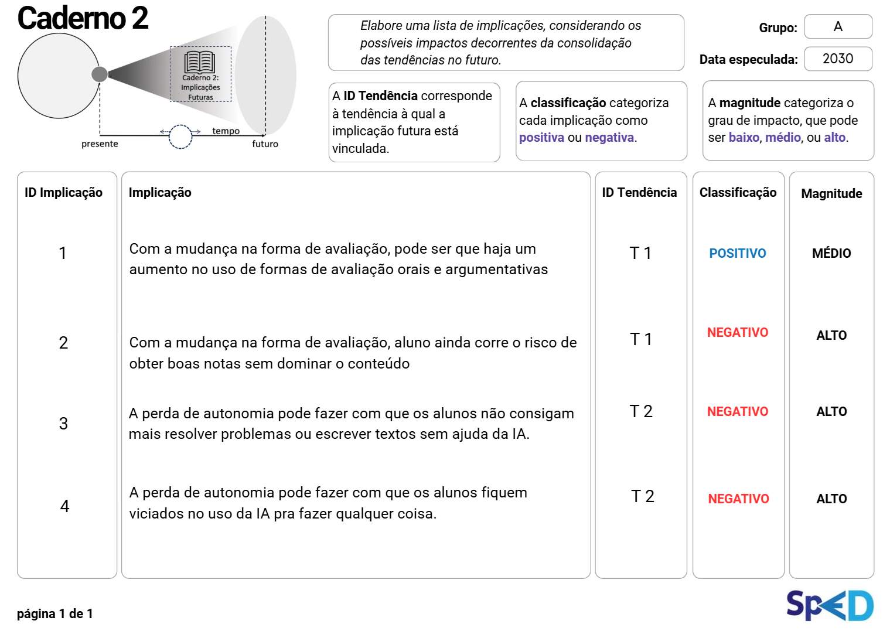
À medida que as implicações são registradas, elas também são destacadas na Roda de Implicações Sociotécnicas, permitindo visualizar em quais áreas da vida cotidiana esses impactos podem se manifestar.
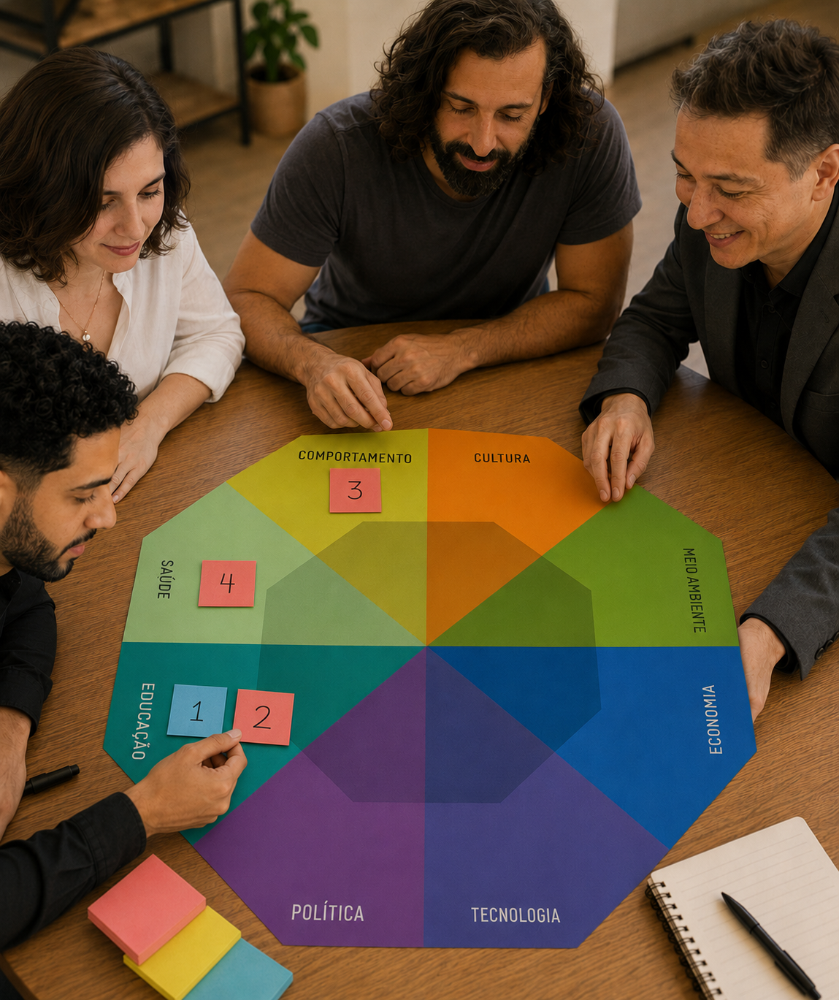
4 Em seguida, a equipe utiliza a Roda de Possibilidades para avaliar o quão plausíveis, possíveis ou prováveis essas implicações podem ser.
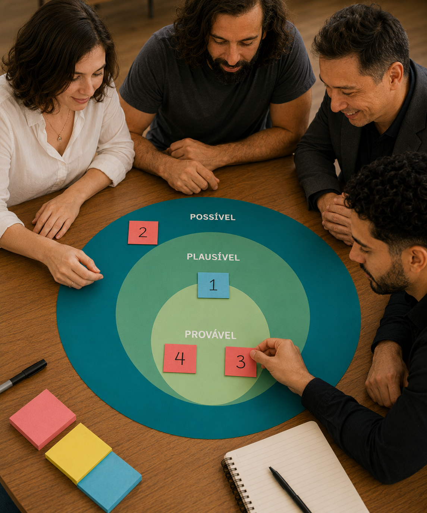
A partir dessas análises, torna-se possível definir prioridades estratégicas e identificar quais implicações exigem maior atenção durante o design da solução.
5 A equipe então propõe uma solução inicial e registra o design na primeira página do Caderno 3.
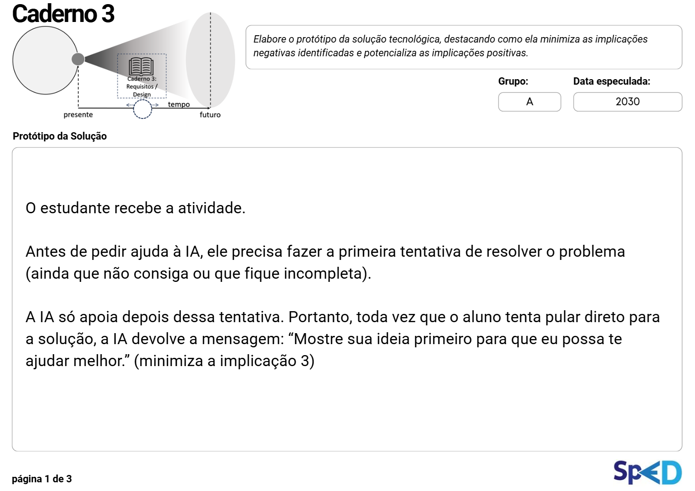
6 Para aprofundar criticamente a solução proposta, a equipe utiliza o Cyborg AI ou, alternativamente, as Cartas de Mediação Tecnológica. Neste exemplo, utilizamos o Cyborg AI.
À medida que interagem com a ferramenta, as equipes registram suas reflexões na segunda página do Caderno 3.
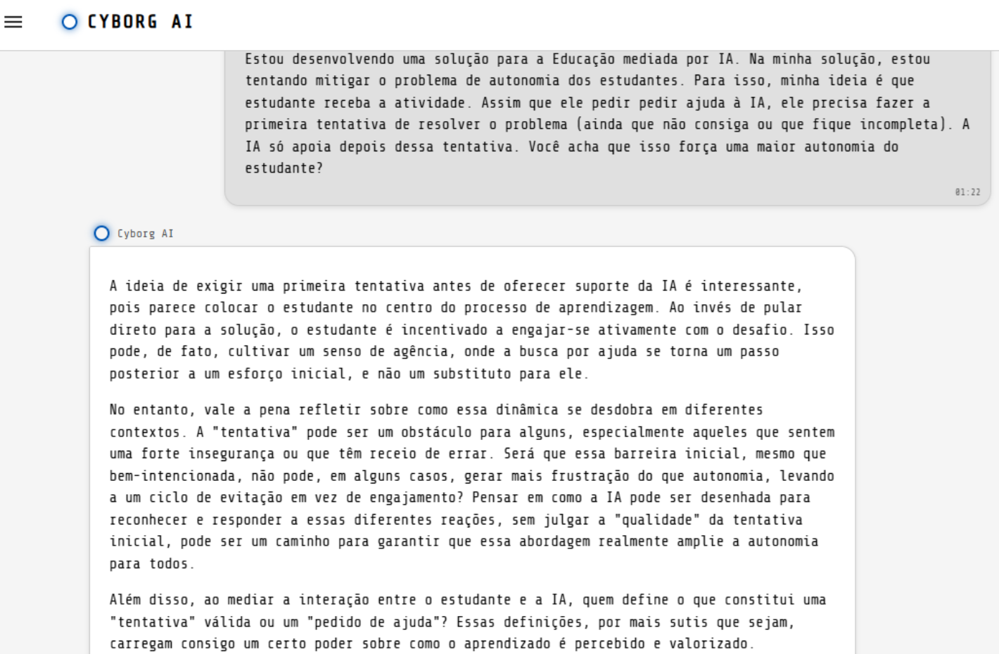
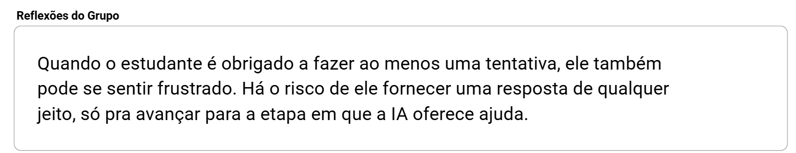
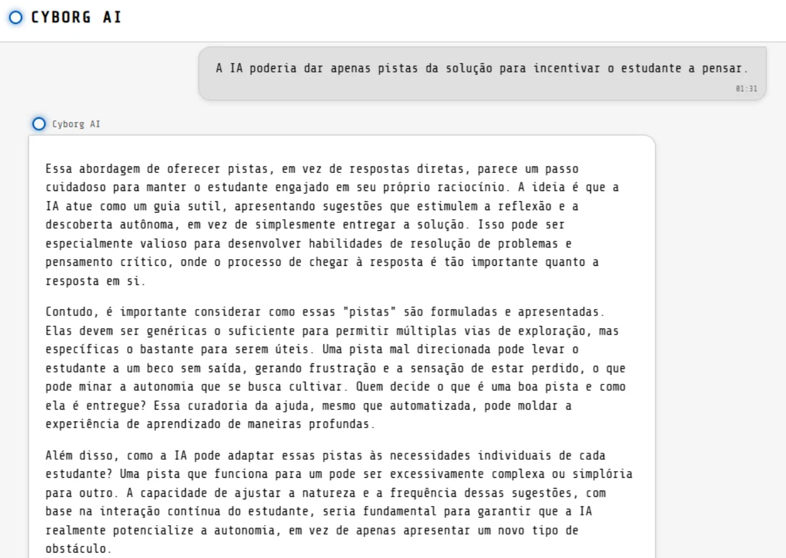
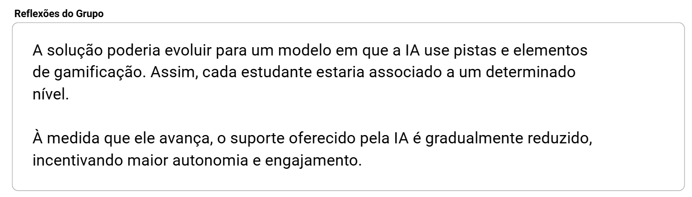
Ao final do processo, o conjunto de reflexões produzidas pela equipe é registrado na segunda página do Caderno 3.
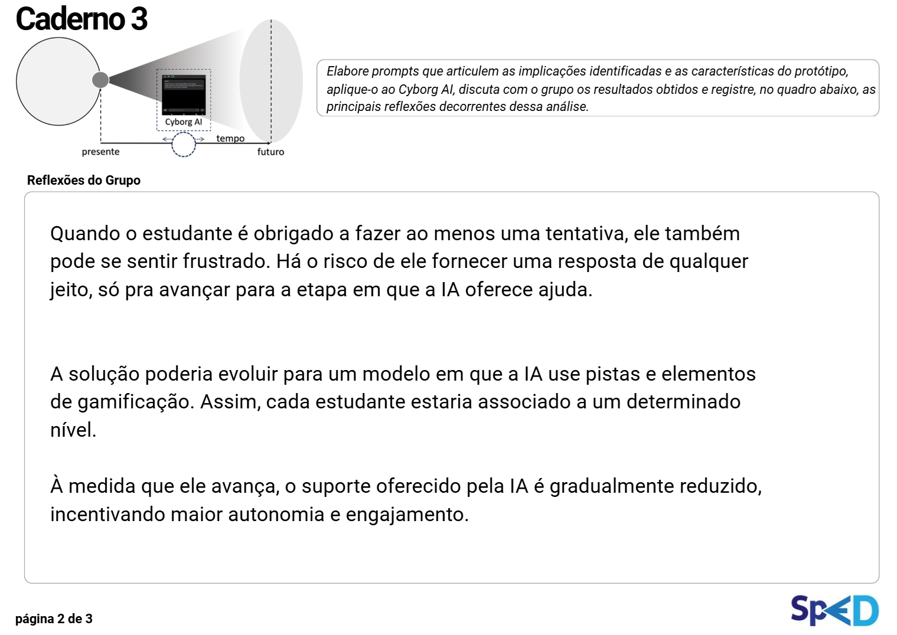
7 Após esse processo reflexivo, os requisitos da solução são refinados e registrados na terceira página do Caderno 3.
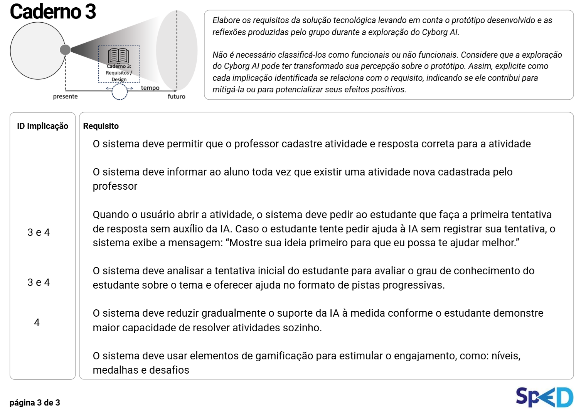
Copyright © EntangledFuture Toolkit. Todos os direitos reservados.
Criado por Marcelo Soares Loutfi. Distribuído por SaLT